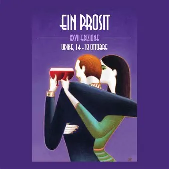

da mer 14 ott a dom 18 ott
Ein Prosit Udine 2026
Oltre cento appuntamenti in quattro giorni, all’insegna di presentazioni, degustazioni, incontri e convegni tenuti dalle più note personalità del panorama giornalistico; ampio spazio espositivo a disposizione dei produttori per il momento principale della manifestazione, la…
 Indicazioni
Indicazioni
- Costi e prenotazioni
- Costo non indicato · Prenotazione non indicata
- Programma
- Programma da verificare. Apri la fonte ufficiale per orari e possibili aggiornamenti.
- In caso di maltempo
- Nessuna indicazione specifica pubblicata.
- Note
- Acquisito automaticamente dalla fonte.
L’EVENTO
Descrizione completa
Udine si prepara ad accogliere la XXVII edizione di Ein Prosit , il festival che ogni anno porta in Friuli Venezia Giulia il meglio della gastronomia internazionale contemporanea. Dal 14 al 18 ottobre infatti oltre novanta chef da tutto il mondo si alterneranno ai fornelli dei migliori ristoranti della città in cene a più mani: il risultato saranno menu inediti e irripetibili, figli di incontri e scontri di visione e culture. Ogni serata sarà un viaggio tra sapori e tecniche d’alta cucina durante le quali, la creatività degli chef combinata con materie prime di eccellenza, darà vita a piatti in grado di sorprendere e affascinare. A guidare il programma saranno alcuni dei più autorevoli rappresentanti della cucina italiana. Tra i protagonisti figurano gli chef tristellati Massimiliano Alajmo , del ristorante Le Calandre di Rubano (Padova), e Norbert Niederkofler , del ristorante Atelier Moessmer di Brunico (Bolzano), espressioni di due visioni profondamente diverse ma accomunate dalla ricerca, dalla sostenibilità e dall’eccellenza. Accanto a loro, Ein Prosit celebra anche il valore delle trattorie contemporanee, con interpreti come Diego Rossi di Trippa a Milano e Sara Ciccolini di SantoPalato a Roma, capaci di raccontare una cucina autentica, personale e profondamente legata alla cultura gastronomica italiana. L’edizione 2026 segna inoltre il ritorno di alcuni dei volti storici che hanno contribuito a costruire l’identità di Ein Prosit negli anni come Carlo Cracco e Corrado Assenza di Caffè Sicilia a Noto, insieme ad altri nomi che rappresentano da sempre un punto di riferimento per la manifestazione, tra cui Ana Roš di Hiša Franko a Kobarid, Matias Perdomo di Contraste a Milano e Antonia Klugmann di L’Argine a Venco a Dolegna del Collio. Grande spazio sarà dedicato alla dimensione internazionale, con una presenza straordinaria di protagonisti della World’s 50 Best Restaurants . Ein Prosit riunirà infatti tre degli ultimi sei vincitori della prestigiosa classifica mondiale: Mitsuharu “Micha” Tsumura di Maido e Virgilio Martínez di Central, entrambi peruviani, e Mauro Colagreco di Mirazur in Francia. A completare questo straordinario racconto, sempre dal Perù arriveranno anche Pía León di Kjolle e Luis Martínez di Mérito, per un incontro che riunisce alcuni degli interpreti più visionari della cucina contemporanea internazionale e racconta l’incredibile evoluzione della gastronomia sudamericana. Non mancherà un capitolo dedicato alla pizza, che vedrà riuniti a Udine, Franco Pepe di Pepe in Grani a Caiazzo, Francesco Martucci de I Masanielli a Caserta, Gabriele Bonci , Simone Padoan de I Tigli a San Bonifacio, i giovani talenti di Confine a Milano e Roberto D’Avanzo di Bob Alchimia a Spicchi a Montepaone: sei protagonisti che rappresentano ai massimi livelli le diverse anime della pizza contemporanea e che raccolgono riconoscimenti nelle principali classifiche nazionali e internazionali. Accanto alle grandi cene e agli incontri con gli chef protagonisti, Ein Prosit offrirà al pubblico un programma ricco di esperienze dedicate alla scoperta dei sapori. Torneranno i food truck tematici , dove gli chef usciranno dalle cucine e scenderanno in strada preparando delle golosità per i passanti, le degustazioni dedicate a vini e prodotti d’eccellenza e i Laboratori dei Sapori , momenti di approfondimento e confronto pensati per avvicinare appassionati e curiosi alle tecniche, alle storie e alle materie prime che caratterizzano il mondo dell’enogastronomia. Come ogni anno, Ein Prosit si conferma un luogo di incontro tra tradizione e innovazione, tra grandi maestri e nuove generazioni, tra il patrimonio gastronomico italiano e le più interessanti evoluzioni della cucina mondiale. Un appuntamento che trasforma Udine nella capitale mondiale del fine dining, accogliendo protagonisti, idee e visioni da tutto il mondo. Ein Prosit è un progetto curato da Claudio Tognoni, Paolo Vizzari e Manuela Fissore . Il programma completo dell’evento è consultabile sul sito: Einprosit.org
IL PROGRAMMA
Programma e orari
Appuntamenti raccolti dalle fonti elencate. Dove manca un orario, non è ancora disponibile in questa scheda.
Programma pubblicato
- Dal 2026-10-14 al 2026-10-18
INFORMAZIONI UTILI
Prima di partire
- Controllare la fonte prima di partire.
ORGANIZZAZIONE